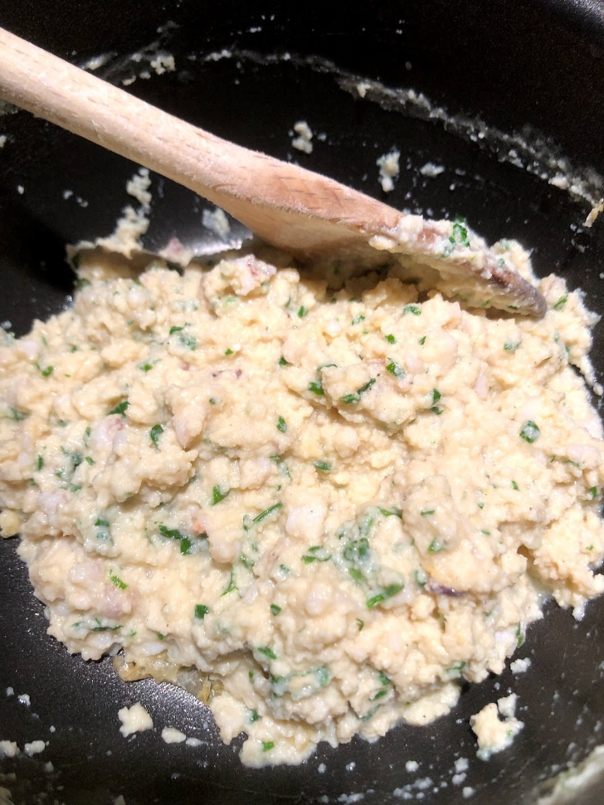
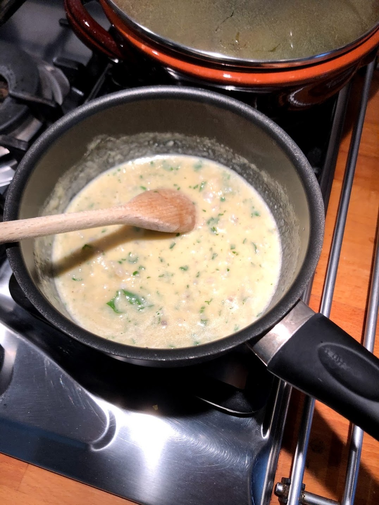
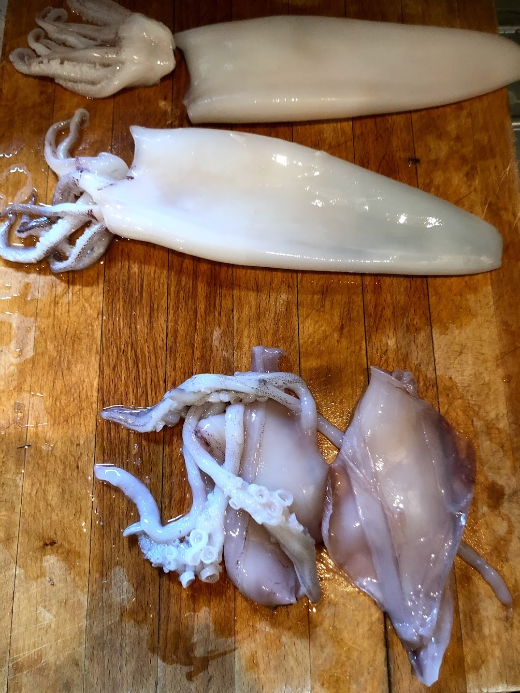
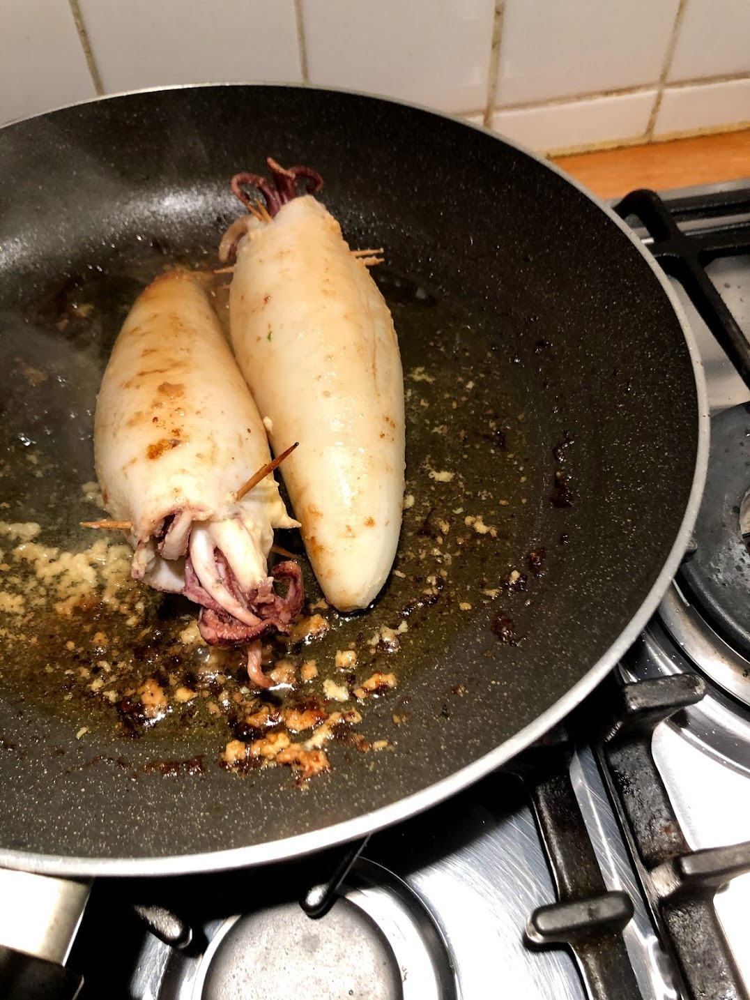
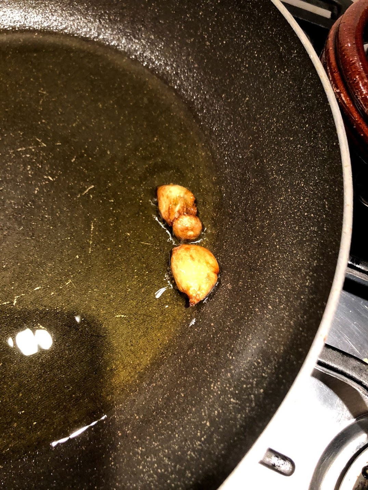

Calamari ripieni
Introduzione e contesto

Qui il calamaro fa la differenza...
Se è troppo fresco può risultare sorprendentemente duro.
Meglio che sia stato abbattuto oppure lasciato riposare qualche giorno.
Ingredienti
| Ingrediente | Quantità | Unità | Note |
|---|---|---|---|
| Calamari | 10 | n | |
| Uova | 10 | n | |
| Prezzemolo | qb | ||
| Pecorino romano | 150 | g | Bronzetto |
| Aglio | 1 | n | |
| Pomodoro | |||
| Olio extra verdine d'oliva | |||
| Sale | |||
| Pepe |
Preparazione


Io preparo per prima cosa il ripieno.
Cuocio molto lentamente in padella, con poco olio, le uova sbattute con pecorino, sale, pepe e prezzemolo.Qui bisogna fare attenzione: non deve diventare una frittata.
Devono restare morbide, quasi cremose.Per riuscirci tengo il fuoco basso e interrompo spesso la cottura, spostando la padella dal calore per non far salire troppo la temperatura.
Quando sono appena rapprese le tolgo e le lascio raffreddare un poco, in modo che non continuino a solidificare.
Riempio i calamari con questo composto, senza forzarli troppo, e li richiudo con la testa. Li cucio con ago e filo bianco.


In una padella faccio profumare l’aglio in poco olio e poi lo tolgo.
Metto i calamari e li faccio rosolare con calma, girandoli, finché prendono colore.Quando hanno già perso parte della loro acqua e questa si è in parte consumata, aggiungo il pomodoro.
Preferisco una soluzione più fresca e meno cotta della ricetta originaria: pomodoro appena scottato o una salsa molto leggera, aggiunta solo in questa faseCompleto la cottura senza allungarla troppo.
Il punto giusto è quando il calamaro resta morbido e il sugo accompagna senza coprire il ripieno.
Note e osservazioni
Se diventano una frittata, il piatto si appesantisce subito. Devono restare morbide, quasi una crema.
La cottura dei calamari è sempre un equilibrio.
Poco cotti sono teneri.
Se si insiste un po’ diventano duri.
Solo con una cottura lunga tornano morbidi.
Qui conviene stare nella prima zona: cottura controllata, senza prolungarla troppo.
{kind=link}